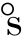

J.Pr

uěk先生：前两天，收到来信，说要将我的《呐喊》，尤其是《阿Q正传》，译成捷克文出版，[251]征求我的意见。这事情，在我，是很以为荣幸的。自然，您可以随意翻译，我都承认，许可。
至于报酬，无论那一国翻译我的作品，我是都不取的，历来如此。但对于捷克，我却有一种希望，就是：当作报酬，给我几幅捷克古今文学家的画像的复制品，或者版画（Graphik），因为这绍介到中国的时候，可以同时知道两个人：文学家和美术家。倘若这种画片难得，就给我一本捷克文的有名文学作品，要插画很多的本子，我可以作为纪念。我至今为止，还没有见过捷克文的书。
现在，同封寄上我的照相一张，这还是四年前照的，然而要算最新的，因为此后我一个人没有照过相。又，我的《在中国文学上的位置》[252]一篇，这是一个朋友写的，和我自己的意思并不相同；您可以自由取用，删去或改正。还有短序一篇[253]，是特地照中国旧式——直写的；但字太大了，我想，这是可以缩小的罢。
去年印了一本《故事新编》，是用神话和传说做材料的，并不是好作品。现在别封寄呈，以博一笑。
专此布复，即请暑安。
鲁迅 七月二十三日
再者：
此后倘赐信，可寄下列地址：
Mr.Y.Chou，
C/OUchiyama Bookstore，
11 ScottRoad，
Shanghai，China.[254]
但，我因为今年生了大病，新近才略好，所以从八月初起，要离开上海，转地疗养两个月，十月里再回来。在这期间内，即使有信，我也是看不到的了。
注 释
[250] 雅罗斯拉夫·普实克（Jaroslav Pr uěk1906—1980） 捷克斯洛伐克汉学家。1932年为研究中国历史来我国收集资料，后通过文学杂志社与鲁迅联系。著有《中国，我的姐妹》、《中国的文学与文化》等。
uěk1906—1980） 捷克斯洛伐克汉学家。1932年为研究中国历史来我国收集资料，后通过文学杂志社与鲁迅联系。著有《中国，我的姐妹》、《中国的文学与文化》等。
[251] 指捷克文译本《呐喊》。收《阿Q正传》等八篇小说，普实克和诺沃特娜合译。1937年12月布拉格人民文化出版社出版，为《人民丛书》之一。
[252] 《在中国文学上的位置》 即《鲁迅在中国文学上的地位——给捷克译者写的几句话》，冯雪峰作。在《工作与学习丛刊之二：原野》（1937年3月25）发表时署名武定河。
[253] 即《〈呐喊〉捷克译本序言》，后收入《且介亭杂文末编》。
[254] 英语：“中国，上海，施高塔路十一号，内山书店转，周豫先生”。